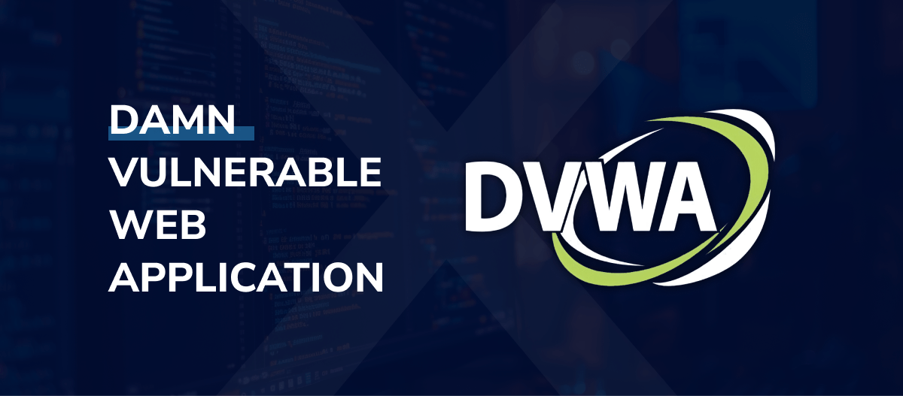

Parcours & Expérience
Mon projet professionnel s'articule autour de la cybersécurité, de l'audit et de l'administration réseau.
Mon stage au sein de l'Accueil Protection de Site du CNPE de Saint-Laurent (EDF) m'a permis d'appréhender la cybersécurité industrielle en milieu classé OIV (Opérateur d'Importance Vitale), renforçant mes compétences en analyse de risques (méthode EBIOS RM), coopération avec le SOC et matrices de conformité réglementaire.
À l'IUT de Blois, je développe une approche pragmatique et technique des infrastructures via des projets d'architecture d'entreprise réels (Cisco, VPN IPsec, serveurs Web/Windows/DNS, routage et scripts d'automatisation).
Stagiaire Projet & Cybersécurité
• Analyse de risques (EBIOS RM) : Réalisation d'études de risques sur la dématérialisation des rondes physiques.
• Gestion de projet et déploiement d'outil de suivi : Déploiement d'un nouvel outil de suivi des activités basé sur le retour sur expérience du personnelle et des CNPE de Belleville.
• Audit & Conformité : Création d'une matrice de conformité sécurité physique/logique et tableau de bord automatisé.
• Supervision SOC/PDIS : Qualification, traitement des alertes du réseau industriel et optimisation des règles de détection et création de fiches réflexes en collaboration avec le SOC National.
BUT Réseaux & Télécommunications
Spécialisation Cybersécurité. Déploiement de réseau d'entreprise sécurisé complet, administration système avancée, configuration d'équipement réseau Cisco, tests d'intrusion et analyses de risques.
Baccalauréat Général
Spécialités : Mathématiques et NSI (Numérique et Sciences Informatiques).
Compétences
Cybersécurité
Réseaux & Systèmes
Programmation
Soft skills
Logiciels Exploités
Cybersécurité
Réseaux & Systèmes
Code & Développement
Télécommunications
Bureautique
Projets d'Études
4 projet(s) affiché(s)

SAE CYBER 401 Sécuriser un système d’information
Déploiement complet d'une infrastructure d'entreprise sécurisée par VPN IPsec et serveurs chiffrés, validé par un exercice de confrontation.

SAE3.CYBER.04 - Découvrir le pentesting
Audit applicatif DVWA sur failles d'injection, brute force et élévation de privilèges, avec rédaction de rapports correctifs.

SAÉ 2.01 : Architecture Réseau & Services
Conception d'une architecture réseau d'entreprise complète avec accès Internet.

SAE Télécom — Modélisation Radio & Antennes
Simulation physique et calculs d'atténuation et bilans de liaisons pour antennes AM/FM directionnelles.
En savoir plus
Je recherche un contrat d'apprentissage ou de professionnalisation dans le cadre de ma 3e année de BUT Réseaux et Télécommunications (spécialisation cybersécurité), débutant à la rentrée 2026.
J'administre des serveurs sous Linux Debian/Ubuntu et Windows Server, des serveurs DNS (Bind9), des serveurs Web (Apache, Nginx en HTTPS) et la conteneurisation d'applications via Docker.
En tant que stagiaire Cybersécurité chez EDF CNPE de Saint-Laurent, j'ai qualifié et traité des incidents en lien avec le SOC national, mené des analyses de risques EBIOS RM sur des solutions numériques, et créé des matrices de conformité liant sécurité physique et logique.
Créer un contact
Travaillons
ensemble.
Intéressé par mon profil ou mes réalisations ? Laissez-moi un message pour planifier un entretien ou discuter de vos besoins en réseaux et cybersécurité !